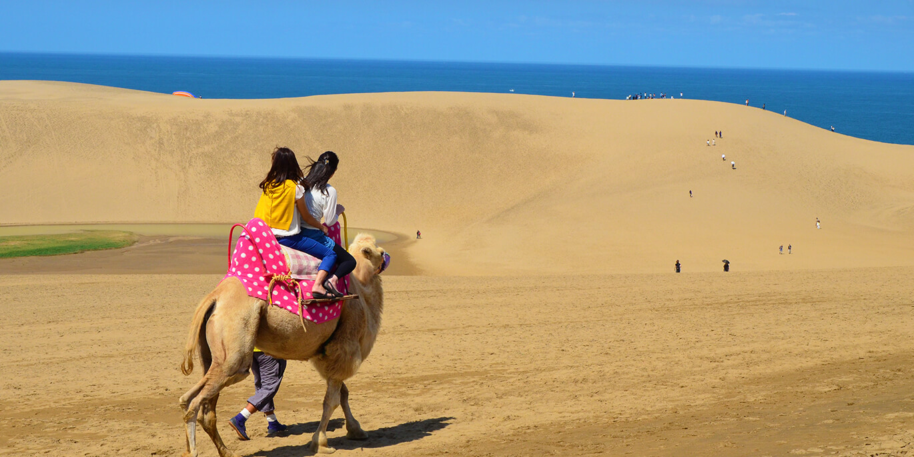
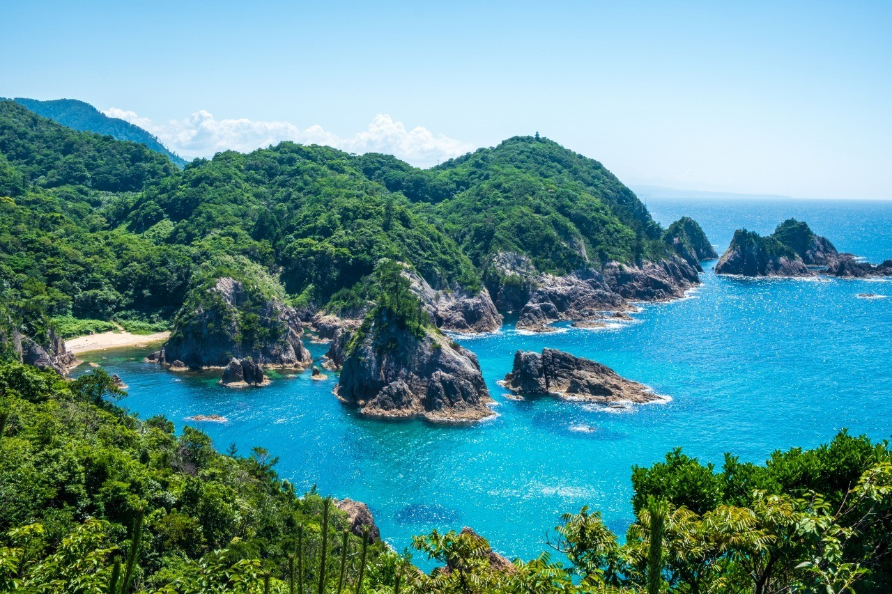
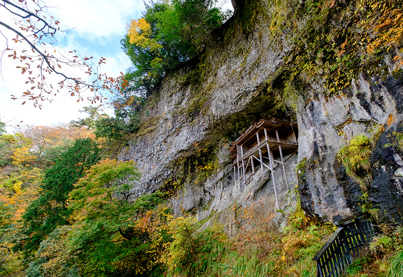

鳥取砂丘
鳥取県を訪れたら絶対に外せない日本最大級の海岸砂丘。 一歩足を踏み入れると、そこには日本離れした大自然のパノラマが広がっています！

見どころ
-
🌊 絶景の頂「馬の背」
高さ約47mの巨大な砂の丘。 登りきった先には、真っ青な日本海と、風が描く砂の芸術「風紋（ふうもん）」の 美しいコントラストが待っています。
-
🐪 非日常のアクティビティ
砂丘ならではの「らくだ乗り体験」でのんびり異国情緒を味わうもよし。 スリル満点の「パラグライダー」や「サンドボード」でアクティブに遊ぶもよし！
-
🌇 時間で変わる幻想的な風景
青空が眩しい日中はもちろん、茜色に染まる「夕暮れ時」や、夏の夜の海に浮かぶ「漁火（いさりび）」、 冬の雪景色など、いつ訪れても違う表情に出会えます。
スポット情報
- 住所：〒689-0105 鳥取県鳥取市福部町湯山2164-807
- 料金：散策自由（無料）
- アクセス：JR鳥取駅から路線バスで約20分「鳥取砂丘」下車
- 公式サイト：鳥取砂丘インフォメーション
水木しげるロード
鳥取県境港市に足を踏み入れると、そこは人間と妖怪がゆる〜く共存するノスタルジックな異世界！ JR境港駅から約800mにわたって続く通りには、あちこちに妖怪たちが潜んでおり、歩いているだけで童心に帰れる最高のエンターテインメント・ストリートです！
見どころ
-
👻 170体を超える「妖怪ブロンズ像」
通りのあちこちに、鬼太郎や目玉おやじ、ねずみ男はもちろん、全国各地のマニアックな妖怪たちの精巧なブロンズ像がずらりと並んでいます。 お気に入りの妖怪を探しながら歩くだけでもワクワクします。
-
🍞 妖怪づくしの見どころ＆限定グルメ
黒御影石の御神体がある「妖怪神社」や、妖怪たちがくつろぐ「河童の泉」、そしてリニューアルした「水木しげる記念館」など立ち寄りスポットが満載。 鬼太郎たちの形をした妖怪パンや限定グッズ、妖怪グルメも楽しめます。
-
🌙夜になると雰囲気が一変！「妖怪影絵とライトアップ」
日没から22時までは、路上に妖怪たちの影絵が浮き上がり、ブロンズ像や街路樹が怪しくライトアップされます。 昼間の賑やかさから一転、どこか妖しく幻想的な「夜の妖怪ワールド」を散策できます。
スポット情報
- 住所：〒684-0004 鳥取県境港市大正町（ほか各町）
- 料金：散策自由（無料）※水木しげる記念館などは別途入館料が必要
- アクセス：JR境港駅から徒歩すぐ
- 公式サイト：水木しげるロード（さかいみなとポータルサイト）
浦富海岸
鳥取県を訪れたら鳥取砂丘と合わせて絶対立ち寄りたい、日本海の美しさが凝縮された絶景海岸。 一歩足を踏み入れると、そこには透明度抜群の海と奇岩が織りなす大自然のパノラマが広がっています！

見どころ
-
🚤 迫力満点の絶景「遊覧船＆カヤック体験」
海の上からダイナミックな断崖絶壁や洞門を間近で観察！ 小型遊覧船やクリアカヤックに乗れば、洞窟の奥深くや浅瀬まで進むことができ、非日常の探検気分を味わえます。
-
🌊 驚異の透明度「浦富ブルー」
水深25mまで透き通ると言われる、エメラルドグリーンに輝く圧倒的な美しい海。 白い砂浜と青い海、そして松の緑が描く美しいコントラストは、シュノーケリングや海水浴にも最高のロケーションです。
-
🚶♂️ 絶景を歩いて巡る「探勝歩道（城原海岸）」
海岸線に沿って整備された遊歩道からは、眼下に広がる壮大な日本海を一望できます。 波の音を聞きながら、自然が造り出した奇岩「菜種五島（なたねごとう）」などを眺める最高の散策コースです。
スポット情報
- 住所：〒681-0001 鳥取県岩美郡岩美町浦富
- 料金：散策自由（無料）※遊覧船などのアクティビティは別途有料
- アクセス：JR岩美駅から路線バスで約15分「浦富海岸」下車
- 公式サイト：岩美町観光協会
三徳山三沸寺投入堂
鳥取県の中央部にそびえる三徳山（みたくさん）に位置する、日本一危険な国宝建築。 険しい山道を乗り越えた先には、断崖絶壁にまるで魔法で投げ入れられたかのような、息をのむ秘境の絶景が広がっています！

見どころ
-
🧗♂️ まるで修行！？「スリル満点の参拝登山」
投入堂へ向かう道のりは、木の根や鎖を掴んで登る本格的な修験道（しゅげんどう）。 生半可な気持ちでは辿り着けない険しい道だからこそ、無事に辿り着いた瞬間の達成感と感動はひとしおです。
-
🏛️ 崖のくぼみに建つ奇跡「国宝・投入堂」
垂直に切り立った絶壁の凹みに、どうやって建てられたのか今も謎に包まれている奇跡の懸造り（かけづくり）建築。 役行者（えんのぎょうじゃ）が法力で山に投げ入れたという伝承も納得の、荘厳でミステリアスな佇まいです。
-
🌿 参道に点在する「歴史あるお堂と大パノラマ」
投入堂へ至る道中には「文殊堂」や「地蔵堂」などの重要文化財が立ち並びます。 お堂の回廊に腰を下ろせば、眼下に広がる三徳山の雄大な原生林と風を全身で感じられる最高のビューポイントです。
スポット情報
- 住所：〒682-0132 鳥取県東伯郡三朝町三徳1010
- 料金：入山料（大人 1,200円、小中学生 600円）※本堂参拝料＋投入堂参拝登山料の合計
- アクセス：JR倉吉駅から路線バス（三徳山行き）で約40分「三徳山参道入口」下車
- 公式サイト：三徳山三佛寺